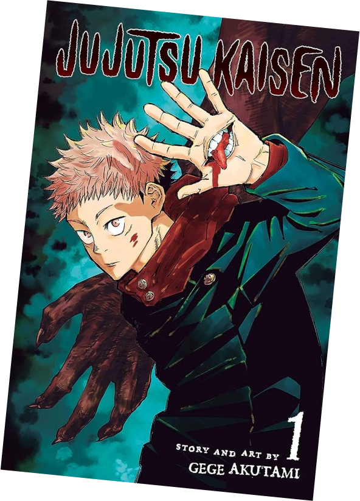

"Jujutsu Kaisen" é uma série de anime e mangá japonesa que segue a
vida de Yuji Itadori, um estudante do ensino médio com habilidades
físicas excepcionais. Após encontrar e abrir acidentalmente um antigo
objeto amaldiçoado, Yuji se vê envolvido em um mundo oculto repleto de
maldições e feitiçaria. Ele é recrutado pela misteriosa organização
Jujutsu Tech, onde aprende sobre a existência de maldições, entidades
sobrenaturais que ameaçam a humanidade.
Yuji se junta a outros estudantes, incluindo o frio e habilidoso
Megumi Fushiguro e a otimista e poderosa Nobara Kugisaki, para
combater as maldições e proteger as pessoas do mundo das trevas. O
trio é guiado pelo sábio e enigmático professor Satoru Gojo, que os
treina nas artes místicas do Jujutsu, uma forma especializada de
combate que utiliza maldições e feitiços para derrotar maldições.
Ao longo da série, Yuji e seus amigos enfrentam desafios intensos,
confrontando maldições poderosas e descobrindo segredos sombrios sobre
o mundo das maldições. Com uma mistura emocionante de ação, comédia e
horror, "Jujutsu Kaisen" explora temas de coragem, amizade e a luta
contra o desconhecido, enquanto os jovens protagonistas lutam para
proteger a humanidade de forças sobrenaturais aterrorizantes.
